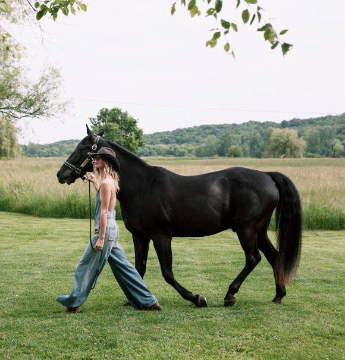

Уроки
верховой езды
С чего начать, как проходят занятия и почему верховая езда —
это спорт для души и тела.

Верховая езда — это уникальное сочетание физической нагрузки и психоэмоциональной разгрузки. Во время езды работают практически все группы мышц, но при этом человек получает огромный заряд положительных эмоций. Неудивительно, что многие взрослые решают исполнить детскую мечту и сесть в седло.
Как проходит первое занятие?
Не стоит бояться, что вас сразу посадят на норовистого жеребца и заставят скакать галопом. Обучение всегда начинается с базы:
- Знакомство с лошадью и конюшней. Инструктор покажет вам животное, расскажет, как его зовут и какой у него характер. Вы научитесь правильно подходить к лошади и поглаживать её.
- Основы ухода. Вам могут предложить почистить лошадь щеткой. Это не только полезно для животного, но и помогает наладить контакт.
- Посадка в седло. Вам покажут, как правильно ставить ногу в стремя и садиться в седло, чтобы не напугать лошадь и не упасть.
- Работа на корде. Первые уроки обычно проходят, когда инструктор держит лошадь на длинной веревке (корде). Вы учитесь держать баланс, правильно сидеть и держать поводья.
Сколько нужно заниматься?
Чтобы почувствовать уверенность в седле, обычно требуется от 10 до 20 занятий. Все зависит от вашей физической подготовки и координации. Не стоит форсировать события: лучше заниматься 1-2 раза в неделю в спокойном темпе, чем изнурять себя ежедневными тренировками.
«Лошадь — лучший учитель. Она никогда не врет и всегда отражает ваши внутренние страхи и зажимы. Победа над собой начинается именно здесь».
Что дают регулярные занятия?
- Правильная осанка. Для удержания равновесия в седле вам придется держать спину прямо. Со временем это входит в привычку.
- Развитие координации. Вам нужно одновременно управлять лошадью (руками), держать баланс (корпусом) и посылать импульс (ногами).
- Снятие стресса. Общение с животными и физическая нагрузка отлично снимают накопившееся напряжение.